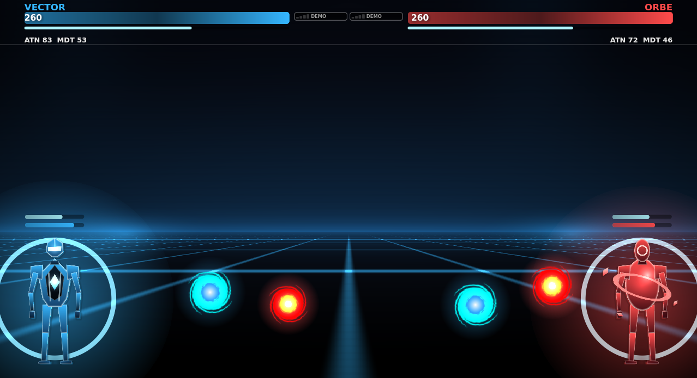
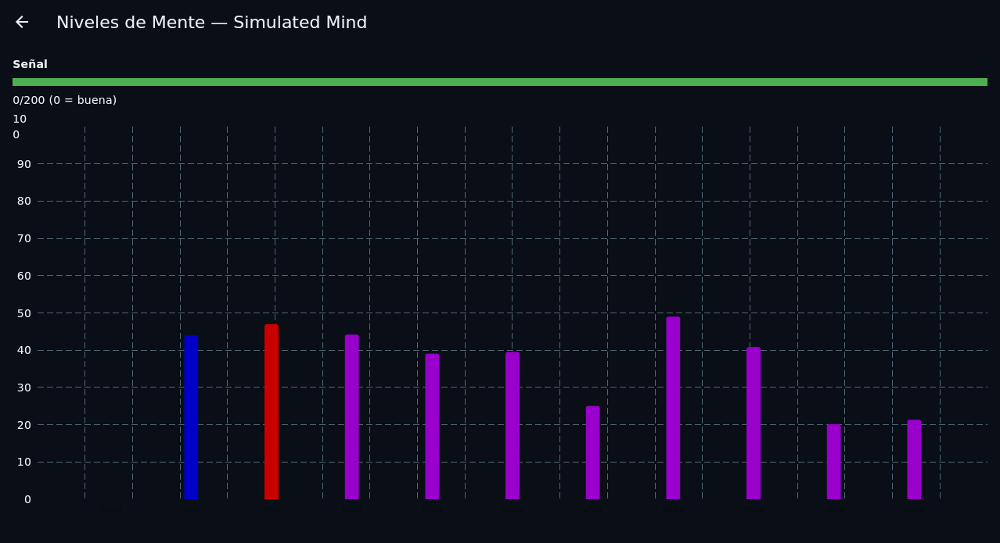
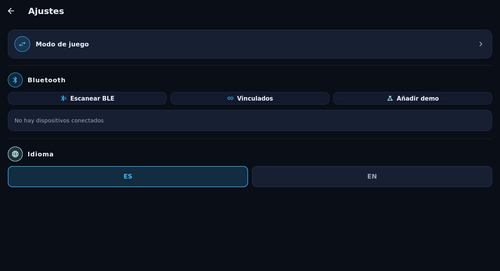

Same silicon. Two serious products.Mismo silicio. Dos productos en serio.
OVERMIND is one Flutter app on one validated signal pipeline. Gamers get a zero-latency brain controller; researchers get an honest, transparent instrument. No cloud tax, no accounts, no black boxes.OVERMIND es una sola app Flutter sobre un único pipeline de señal validado. Los gamers obtienen un mando cerebral de latencia cero; los investigadores, un instrumento honesto y transparente. Sin tasas de nube, sin cuentas, sin cajas negras.
Real-time, on-deviceTiempo real, en dispositivo
EEG frames parsed on a background isolate; the game never waits on I/O. Feedback loop under one second — the loop that makes neurofeedback work.
Los frames EEG se parsean en un isolate en segundo plano; el juego nunca espera a E/S. Bucle de retroalimentación bajo un segundo — el bucle que hace funcionar el neurofeedback.
Validated by bloodValidado con sangre
The signal chain (ASIC raw values → normalization → EMA + 900 ms debounce → blink takeBlink) is a byte-for-byte port of the legacy Overmind after a field session with 6 real headsets. Not a mockup.
La cadena de señal (valores ASIC crudos → normalización → EMA + debounce 900 ms → takeBlink del parpadeo) es un port byte a byte del Overmind clásico tras una sesión de campo con 6 cascos reales. No un mockup.
Radical privacyPrivacidad radical
Brain data is stored locally, deleted with the app, and there is no upload path in the codebase. A neuro-tech product you can audit line by line.
Los datos cerebrales se guardan en local, se borran con la app y no existe ninguna ruta de subida en el código. Neurotecnología que puedes auditar línea a línea.
~$20 hardwareHardware de ~20 €
Runs on MindWave Mobile 2 / any ThinkGear device (classic, BLE or ASIC packet). Research-grade pipelines usually cost $1,000+ in hardware; this demotes price, not method.
Funciona con MindWave Mobile 2 / cualquier dispositivo ThinkGear (clásico, BLE o paquete ASIC). Los pipelines de nivel investigación suelen costar $1,000+ en hardware; aquí se rebaja el precio, no el método.
Your brain, nerfed to 60 Hz.Tu cerebro, balanceado a 60 Hz.
No thumbs, no mouse. The only input is your mental state — and it's brutally honest. Fake focus dies in 900 ms.Sin pulgares, sin ratón. La única entrada es tu estado mental — y es brutalmente honesto. El foco fingido muere en 900 ms.
Mind BattleDuelo Mental
Two headsets, one device, one couch. Attention = fire rate. Meditation = shield regen. Blink = ultimate. TTK 60–90 s of pure prefrontal combat. GG is written by the calmest one.
Dos cascos, un dispositivo, un sofá. Atención = cadencia. Meditación = regen de escudo. Parpadeo = ultimate. TTK de 60–90 s de combate prefrontal puro. El GG lo escribe el más tranquilo.
Mental ArcadeArcade Mental
Balloon (inflate with focus, don't pop), Falcon (flap by focusing), Seesaw (balance focus vs calm). Highscores, daily streaks with a streak-freeze item, mental points that carry across every mode.
Globo (ínflalo con foco, sin reventarlo), Halcón (aletea enfocando), Balancín (equilibra foco vs calma). Récords, rachas diarias con congelador, puntos mentales que atraviesan todos los modos.
Streaks & Mental PointsRachas y Puntos Mentales
One economy across all games: train meditation today, feed your battle aim tomorrow. Daily streak with a freezable miss — progress that respects real life.
Una sola economía para todos los juegos: entrena meditación hoy, alimenta tu puntería de duelo mañana. Racha diaria con fallo congelable — progreso que respeta la vida real.
Sci-Fi HUDHUD Sci-Fi
An Evangelion-inspired interface where the HP bar is your actual attention graph. You literally see your own brain state driving the fight — which is also, quietly, neurofeedback.
Una interfaz inspirada en Evangelion donde la barra de vida es tu gráfica de atención real. Ves literalmente tu estado cerebral piloteando la pelea — lo cual, sin hacer ruido, es neurofeedback.
Neurofeedback without the black box.Neurofeedback sin caja negra.
Lab Mode exposes the whole pipeline: what the ASIC reports, how it's normalized, how it's smoothed — all on screen, all in the open. Built to explore attention training, not to sell diagnoses.El Modo Lab expone todo el pipeline: qué reporta el ASIC, cómo se normaliza, cómo se suaviza — todo en pantalla, todo a la vista. Construido para explorar el entrenamiento de atención, no para vender diagnósticos.
8 EEG bands, live8 bandas EEG, en vivo
Delta, theta, low/high alpha, low/high beta, low/high gamma from the ASIC EEG power register, normalized with the legacy project's published constants — the same math across sessions, so observations are comparable.
Delta, theta, alfa low/high, beta low/high, gamma low/high desde el registro de potencia EEG del ASIC, normalizadas con las constantes publicadas del proyecto clásico — la misma matemática entre sesiones, para que las observaciones sean comparables.
Quality gate firstPrimero, el gate de calidad
Every reading carries its electrode quality. Bad contact locks actions instead of poisoning the record — a discipline borrowed from clinical practice, visible in plain UI.
Cada lectura lleva su calidad de electrodo. Un mal contacto bloquea acciones en vez de envenenar el registro — una disciplina prestada de la práctica clínica, visible en la UI.
Up to 4 headsetsHasta 4 cascos
Monitor four participants simultaneously on one tablet — small-group pilots, classroom demos, twin experiments. One connection per endpoint, single-consumer protection against packet loss.
Monitoriza a cuatro participantes a la vez en una tablet — pilotos en grupo pequeño, demos de aula, experimentos por duplicado. Una conexión por endpoint, protección monoconsumo contra pérdida de paquetes.
Auditable by designAuditable por diseño
Full PRD/TRD/schema in the repo, constants in code, zero obfuscation. A student can reproduce every number on screen. Wellness tool — not a medical device, and we say so out loud.
PRD/TRD/esquema completos en el repo, constantes en el código, cero ofuscación. Un estudiante puede reproducir cada número en pantalla. Herramienta de bienestar — no dispositivo médico, y lo decimos alto.
No renders. Real app.Sin renders. App real.
Screenshots straight from the shipped APK — battle HUD, lab view and settings.Capturas directas del APK publicado — HUD de batalla, vista de lab y ajustes.



Your brainwaves are not a product.Tus ondas cerebrales no son un producto.
Star it. Mod it. Battle with it.Dale star. Modifícalo. Batalla con él.
Flutter source, docs, foundation specs and every decision — public. The repo is the lab notebook and the arcade cabinet.Código Flutter, documentación, especificaciones fundacionales y cada decisión — público. El repo es el cuaderno de laboratorio y la máquina recreativa.
github.com/Thempra/overmind-ng · Flutter · Android 8+ · ThinkGear / MindWave Mobile 2